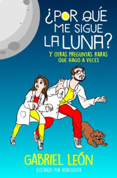

Por que me sigue la luna
Pocas unidadesTOP
Resumen: En esta nueva entrega de la serie de ciencia para niños de Gabriel León, Pachi, su papá y el perro Lukás se sumergirán en el mundo de las preguntas raras sobre el Universo. ¿Por qué los planetas son redondos? ¿Por qué titilan las estrellas? ¿Por qué me sigue la Luna cuando camino? ¿Por qué Marte se ve rojo? ¿Por qué la Vía Láctea se llama así? Son algunas de las interrogantes sobre el espacio que serán abordadas con un toque de humor y cotidianeidad.
Ver Libro